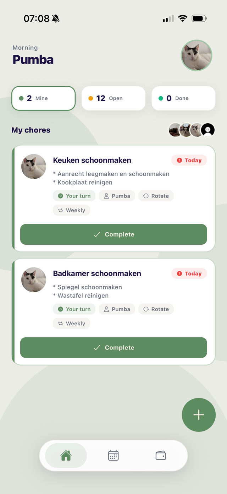

ChoreShare
Huishoud-app voor studentenhuizen. Van nul opgezet: design, app en backend.
Ik zet ideeën om in digitale oplossingen. Met een passie voor development, design en gebruiksvriendelijke interfaces.
Junior Developer

27, uit Arnhem. Ik begon met een MBO-opleiding applicatieontwikkeling en zit nu in mijn derde jaar HBO-ICT aan de Hogeschool Utrecht. Ik bouw met React Native, React en TypeScript, en ik ontwerp het liefst zelf wat ik daarna bouw.
Naast mijn studie werk ik als freelance designer en developer. Ik maak websites voor ondernemers en bouw mijn eigen app, ChoreShare, een huishoud-app voor studentenhuizen die ik van nul heb opgezet.
Waar ik naartoe werk: een developer zijn die je een probleem geeft en een afgemaakt product teruggeeft. Geen half werk, geen buzzwords. In mijn vrije tijd vind je me aan de boulderwand of achter een film.
Een greep uit wat ik de afgelopen tijd heb ontworpen en gebouwd.

Huishoud-app voor studentenhuizen. Van nul opgezet: design, app en backend.
Marketingsite voor de app. Statische one-pager met vloeiende animaties.
Festival-app, teamproject aan de HU. Backend endpoints en de profielpagina gebouwd.
Deze site. Handgetekende stijl, gebouwd zonder framework.
Waar ik dagelijks mee bouw, en wat daaromheen nodig is om het ook echt af te maken.
Een website of app nodig, of gewoon een vraag? Stuur me direct een bericht.